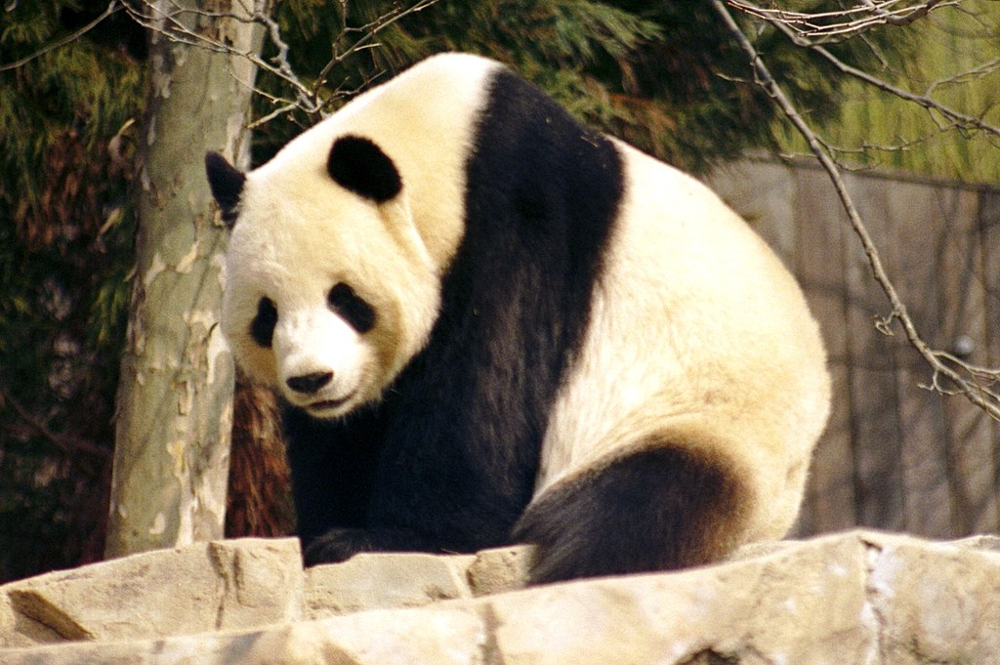

El oso panda o panda gigante (Ailuropoda melanoleuca) es una especie de mamífero del orden Carnivora y, aunque hay una gran controversia al respecto, los últimos estudios de su ADN lo engloban entre los miembros de la familia de los osos (Ursidae), siendo el oso de anteojos su pariente más cercano, si bien este pertenece a la subfamilia de los tremarctinos. Por otro lado, el panda rojo pertenece a una familia propia e independiente; Ailuridae. Nativo de China central, el panda gigante habita en regiones montañosas como Sichuan y el Tíbet, hasta una altura de 3.500 metros.